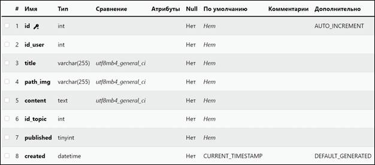

Занятие 14. Категории на
главной странице. Статус постов
Задача урока: изучить реализацию статуса
публикации, связь в phpMyAdmin и вывод категорий на страницу.
На занятии мы
узнаем:
1.
Как работает статус.
2.
О связи в базе данных.
3.
О распределении категорий и их
выводе.
Отображение категорий
на главной странице
Займемся выводом категорий на главную страницу. Откроем файл
index.php в главном
каталоге проекта (рис. 14.1).
Рис. 14.1. Открытие файла
При помощи команды «include» подключаем topics.php.
|
include("application/controllers/topics.php"); |
Перейдем
на главную страницу localhost
и заметим множество ошибок (рис. 14.2).
Рис. 14.2. Ошибки указания на
абсолютный и относительный путь до файла
Уберем отображение ошибок посредством функции «error_reporting»:
|
error_reporting(0); |
Возвращаемся
на главное окно и фиксируем отсутствие проблем, а также появившийся список
разделов. Стоит отметить, что таким образом проблемы не были исправлены. Было
отключено лишь их отображение. Сами проблемы всё ещё существуют.
Найдем код, отвечающий за разделы. Произведем модификацию,
ведущую к автоматическому выводу всех категорий, а также удалим ранние заглушки
(рис. 14.3 – 14.4).
Рис. 14.3. Код до изменений
Рис. 14.4. Измененный код
Получаем все значения из таблицы с категориями, выводя
поочередно название каждой в список. Открыв вновь главную страницу, можем
убедится в корректной работе нашего кода (рис. 14.5 – 14.6).
Рис. 14.5. Запись в
базе данных
Рис. 14.6. Демонстрация наличия
разделов на главной странице
Создание публикаций
Займемся созданием постов.
Для начала создадим базу, в которой и будем хранить все наши публикации.
Перейдем в нашу базу данных, произведем вход в учетную запись. Далее создадим
новую таблицу posts (рис. 14.7).
Рис. 14.7. Создание таблицы постов
Заполним её следующими
элементами:
|
Имя |
Тип |
Длина |
Тип |
|
Id |
INT |
12 |
Не указываем |
|
id_user |
INT |
12 |
Не указываем |
|
title |
VARCHAR |
255 |
Не указываем |
|
path_img |
VARCHAR |
255 |
Не указываем |
|
content |
TEXT |
Не указываем |
Не указываем |
|
id_topic |
INT |
12 |
Не указываем |
|
published |
TINYINT |
Не указываем |
Не указываем |
|
created |
DATETIME |
Не указываем |
CURRENT_TIMESTAMP |
|
|
Id – уникальный номер публикации. Id_user – уникальный номер автора публикации. Title – заголовок публикации. Path_img – путь к изображению, прикрепленному к
публикации. Content – содержание публикации. Published – статус публикации: опубликована она или нет. Created – время создания публикации. TINYINT – представляет целочисленные значения длиной в 1 байт в
диапазоне от 0 до 255. |
Чтобы убедиться в корректности наших данных, переходим
в только что созданную таблицу и проверяем (рис.14.8).

Рис. 14.8. Структура таблицы постов
Как мы можем заметить,
таблица успешно создана. Однако одной таблицы мало. Перейдем к созданию
контроллера, что будет отвечать за работу с нашими публикациями. Для этого
пройдем по пути application/controllers и создадим внутри файл posts.php (рис. 14.9).
Рис. 14.9. Создание файла
Скопируем в него полностью
код из topics.php, внутри каталога controllers, однако поменяем наши рабочие переменные
(рис. 14.10).
Рис. 14.10. Копирование кода
Займемся подключением
нашего контролера к создателю постов. Для этого откроем файл «create.php» по пути «admin/posts» (рис. 14.11).
Рис. 14.11. Открытие файла
Вставим в файл строку кода.
|
include("../../application/contollers/posts.php"); |
Вместе с этим произведем замену и обозначим
имена для наших методов в соответствии с ранее созданной таблицей, а также
поправим текст нашего селектора и настроим ему автоматическое интегрирование
категорий в выпадающий лист, чтобы не заниматься этим вручную каждый раз
(рис. 14.12).
Рис. 14.12. Редактирование кода
Перейдем на наш сайт.
Регистрируемся или авторизуемся, после чего пытаемся добавить пост. Убедимся,
что наши категории успешно подцепились методом селектора (рис. 14.13).
Рис. 14.13. Категории из выбора
Далее займемся настройкой
ловца ошибок. Для этого вернемся к нашему контроллеру posts.php. Для начала добавим переменную для $topics, получая значение топика.
|
$topic =
trim($_POST[‘topic’]); |
Теперь настроим непосредственно нашего ловца.
Изменим сообщения ошибок в соответствии с информацией о постах, а также удалим
проверку на наличие категории с таким же названием, как наше. Потому что посты
могут быть и внутри одной категории. Создадим переменную post и внесем в неё всю информацию о новой
публикации, после чего будем отправлять её таблицу на хранение посредством
метода insert. Топик публикации также будет выбираться на основании ранее
объявленного внутри переменной post значения (рис. 14.14 – 14.15).
Рис. 14.14. Написание кода
Рис. 14.15. Добавление категории
Создаем пост для проверки
работы кода (рис. 14.16).
Откроем нашу базу данных и
заметим изменение в количестве постов и их содержимом. Id 2 имеет имя и изображение из нашего
тестового поста.
Рис. 14.16. Добавление поста в базу
данных
Вывод постов.
Добавление статуса
Приступим к выводу всех постов в нашу админ-панель, а также
настроим статусы публикаций.
Для начала перейдем к нашему контроллеру posts.php
(рис. 14.17).
Рис. 14.17. Переходим в файл
Объявим переменную post и получим в неё данные обо всех
существующих публикациях.
|
$post = ALLselect(‘posts’); |
Далее
двинемся в admin/posts и откроем файл
index.php. Свяжем его с
нашим контроллером.
|
include("../../application/controllers/posts.php"); |
Удалим
лишний div и напишем код, что будет
обращаться к ранее созданной базе данных posts и работать с каждой
записью автоматически (рис. 14.18).
Рис. 14.18. Пример лишнего div
Для этого создадим класс и настроим зависимости некоторых
полей, помещая информацию о номере, заголовке и авторе публикации в выводимое
окно. Поскольку вывод будет идти в административную панель, создадим элементы
для редактирования и удаления необходимых публикаций заранее, не забыв и про
работу со статусом. Как и в прошлый раз – обращаемся по ключу с дополнительным
значением для корректной работы с базой данных (рис. 14.19).
Рис. 14.19. Создание класса
Для отслеживания статуса состояния поста выведем checkbox,
который потребуется отметить пользователю для публикации. Перейдем в admin/posts/create.php и дополним
следующим кодом (рис. 14.20).
Рис. 14.20. Создание checkbox
После оформления checkbox необходимо получать данные о его
статусе. Для этого вернемся в контроллер posts.php и создадим
переменную publish.
|
$publish = isset($_POST[‘publish’])
? 1 : 0; |
Спустившись
ниже по коду и найдя переменную post, изменим значение вложенной published
на значение только что созданной publish, чтобы иметь не статичный, а динамичный
статус поста.
|
‘published’ =>$publish, |
Перейдем
в database/db.php и создадим
функцию, которая будет выбирать записи для вывода автора поста в админ-панель.
Обратимся к знакомой глобальной переменной pdo. Оформим запрос на
сравнение значений двух таблиц посредством метода join, указав необходимые
значения для сравнения, возвращая итогом работы id автора публикации
(рис. 14.21).
Рис. 14.21. Написание кода
Перейдем обратно к контроллеру posts.php. Получим
информацию о публикациях, вызвав нужный нам метод в переменной postAdmin.
|
$postAdmin = ALLselectPostUsers(‘posts’, ‘users’); |
Теперь
мы можем вызвать этот метод там, где он уже подключен. Двигаемся по пути admin/posts/index.php и модифицируем
код под наши нужды.
Добавим использование метода postadmin, а также заменим
отображение id
пользователя на его имя. Вместе с этим изменим индексы колон и произведем
верстку согласно нашему представлению, получив следующий итог (рис. 14.22).
Рис. 14.22. Написание кода
Убедимся, что всё работает как надо.
Перейдем в админ-панель, после чего попробуем произвести управление постами,
что уже существуют в нашей базе данных (рис. 14.23).
Рис. 14.23. Панель постов
Для теста перейдем в базу данных. Изменим значение одного из
постов и его статус публикации на 0 (рис. 14.24).
Рис. 14.24. Статус постов
Обновим страницу. Фиксируем изменение статуса и подмену
кнопки удаления на публикации. На этом основная настройка завершена (рис.
14.25).
Рис. 14.25. Панель постов
Связь с phpMyAdmin
Рассмотрим связь между таблицами. В нашем
случае – установим связь с
категорией и постами через phpMyAdmin (рис.
14.26).
Рис. 14.26. Вход в базу данных
На главной странице переходим в таблицу «posts», затем в «Связи» (рис. 14.27).
Рис. 14.27. Создание связи
В нашем случае необходимо связать столбец «id_topic», базу данных «socialsite», таблицу «categories» по столбцу «id» (рис. 14.28).
Рис. 14.28. Создание связи
При реализации связей между таблицами при помощи
внешнего ключа или FOREIGN KEY мы сталкиваемся с такой проблемой: для удаления
данных из таблиц базы данных нам необходимо выполнить две команды DELETE:
сперва нужно удалить данные из таблицы справочника, а затем удалить строку из
таблицы, которая ссылается на справочник.
|
|
CASCADE - каскадное
поведение обычно используется при настройке отношений между моделями. Когда
объект, на который имеется ссылка, удаляется, все объекты, ссылающиеся на
этот объект, также будут удалены. PROTECT - аргумент PROTECT
предотвращает удаление указанного объекта, если есть объекты, ссылающиеся на
этот объект. Другими словами, объект, на который имеется ссылка, не может
быть удален, пока существуют объекты, ссылающиеся на него. NO_ACTION - несколько
рискованная взаимосвязь, которая может существовать между двумя моделями. Как
следует из названия, когда объект, на который имеется ссылка, удален, объект,
на который указывает ссылка, не будет изменен для всех объектов ссылки.
Другими словами, ничего не будет сделано для обработки последствий удаления. SET_NULL - как следует
из названия, когда объект, на который указывает ссылка, удаляется, то объект,
на который указывает ссылка, для всех объектов ссылки устанавливается в NULL.
Эта связь требует, чтобы поле объекта, на которое указывает ссылка, допускало
значение NULL. |
Чтобы избежать такой проблемы и не писать лишние SQL-запросы,
было реализовано каскадное удаление данных из таблиц. При каскадном удалении
данных мы не пишем лишний SQL-запрос DELETE, а также гарантируем себе то, что
целостность данных в базах данных не будет нарушена (рис. 14.29).
Рис.14.29. Каскадное удаление
Прежде чем сохранить изменения, необходимо
проверить наличие параметра Null в «id_topic» (рис. 14.30).
Рис. 14.30. Наличие Null
в табличной структуре
Так как мы не имеем Null в
структуре, справа в строке «id_topic» необходимо поставить галочку Null.
Сохраняем изменения (рис. 14.31 – 14.32).
Рис. 14.31. Редактирование строки «id_topic»
Рис. 14.32. Итоговый вид таблицы после редактирования
Повторно выставляем в «Связи» необходимые
параметры, как и в прошлый раз. Сохраняем (рис. 14.33 – 14.34).
Рис. 14.33. Повторное редактирование связи с «id_topic»
Рис. 14.34. Итоговый лист связей
В разделе «Обзор» можно увидеть, что теперь
каждая запись связана с категорией по категории «id_topic» (рис. 14.35).
Рис. 14.35 .Установленные связи с базой данных «socialsite»
На этом четырнадцатое занятие
окончено!
В рамках этого занятия мы вывели категории на
главную страницу, сделали посты и их статусы для взаимодействия, а также
познакомились со связью в базе данных.
На следующем занятии мы реализуем прикрепление изображения к публикациям, оптимизируем вывод
ошибок, подготовим настройку постов.
После прохождения каждого занятия рекомендуем повторить все термины,
которые были изучены, а также закрепить пройденный материал, ответив на
контрольные вопросы.
|
Это нужно запомнить |
|
|
|
CASCADE - каскадное
поведение обычно используется при настройке отношений между моделями. Когда
объект, на который имеется ссылка, удаляется, все объекты, ссылающиеся на
этот объект, также будут удалены. PROTECT - аргумент
PROTECT предотвращает удаление указанного объекта, если есть объекты,
ссылающиеся на этот объект. Другими словами, объект, на который имеется
ссылка, не может быть удален, пока существуют объекты, ссылающиеся на него. NO_ACTION - несколько
рискованная взаимосвязь, которая может существовать между двумя моделями. Как
следует из названия, когда объект, на который имеется ссылка, удален, объект,
на который указывает ссылка, не будет изменен для всех объектов ссылки.
Другими словами, ничего не будет сделано для обработки последствий удаления. SET_NULL. - как следует
из названия, когда объект, на который указывает ссылка, удаляется, то объект,
на который указывает ссылка, для всех объектов ссылки устанавливается в NULL.
Эта связь требует, чтобы поле объекта, на которое указывает ссылка, допускало
значение NULL. |

Контрольные вопросы
1. Что такое tiniyint?
2. Что передается внутрь квадратных скобок?
3. Как встраивается код на PHP в HTML?